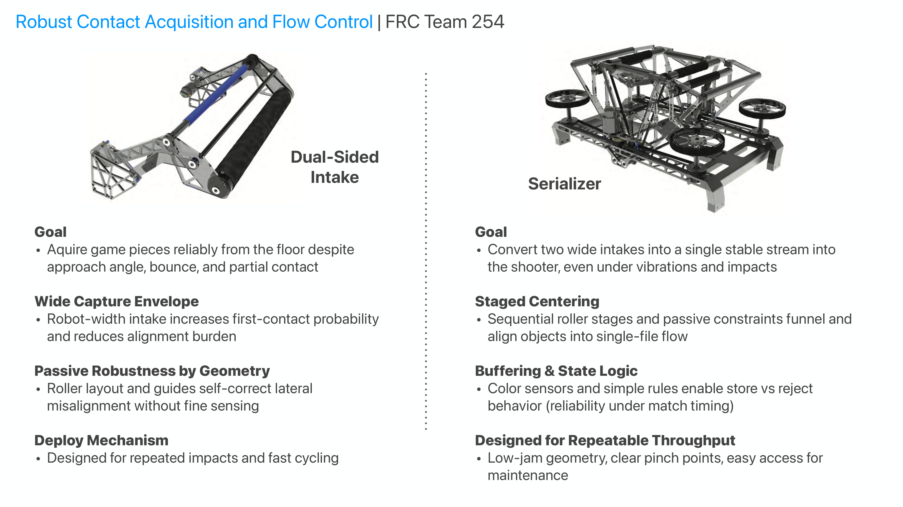

Robust contact acquisition and flow control

Competition robotics mechanisms designed for reliable object acquisition, centering, serialization, and match-speed robustness under repeated impacts and imperfect alignment.
Project framing
- Problem-driven mechanical design with rapid build-test iteration.
- Emphasis on geometry, material behavior, and manufacturable implementation.
- Presented as a concise case study; replace this text with deeper methods, results, and figures when ready.